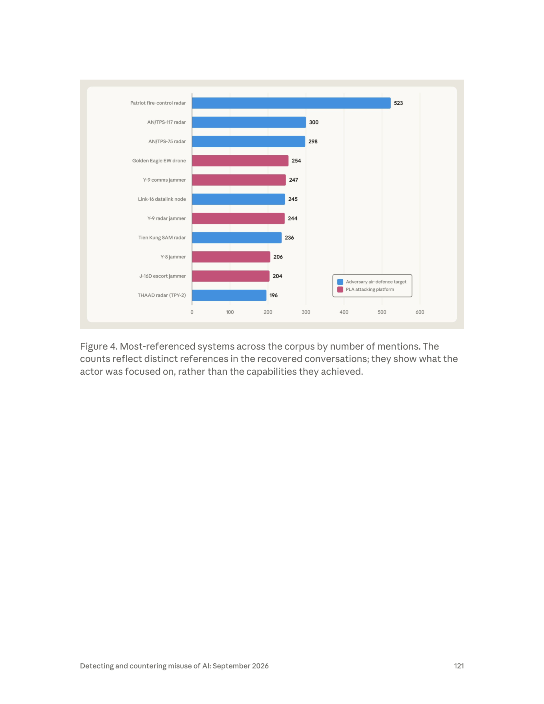
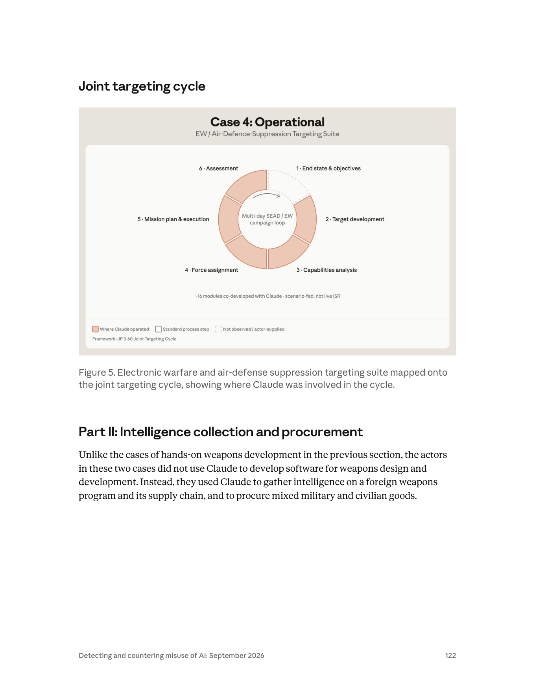

課程模組：04 常規武器（Conventional weapons） ｜ 一手來源：Anthropic《Detecting and countering misuse of AI: September 2026》PDF p.119（下半起）–p.123（上半）；圖表 Figure 4（p.121）、Figure 5（p.122） ｜ 整理日期：2026-09-13

課程定位：這是整份報告對台灣最直接、最敏感的案例，本課程的重點單元。 本檔以 PDF 原文逐字核對每一個數字與名稱，並用 WebSearch 對台灣防空體系、解放軍軍事科學院、SEAD／joint targeting cycle 準則、以及國內外媒體報導做獨立查證。凡屬「報告明講」與「研究員合理推論」之處，全文皆明確區分。
一名位於中國的國防／軍工研究人員，用 Claude 的聊天、程式編寫、代理式（agentic）工作工具，設計、建構並反覆修改一套「約 16 個模組」的中文電子戰（EW）與防空壓制（SEAD）軟體套件，從底層邏輯到使用者介面全由 Claude 協助完成，前後迭代 12 個版本。 這是報告「常規武器」章節 Part I 的第四個、也是最後一個「動手做武器」案例。
這套軟體不是玩具。 它會分析對手的雷達、地對空飛彈（SAM）陣地、指揮所、通訊節點，計算它們的偵測涵蓋範圍、評估電子干擾的有效性、依價值與脆弱性替目標排序（含「先壓制哪一個」），並規劃跨多日戰役如何把干擾機架次（jammer sorties）分派給各目標。它還建模了愛國者（Patriot）與 THAAD 等級系統的接戰範圍（engagement envelope）。
本案最敏感、也是全報告對台灣最刺眼的一句：專案進行到一半，Anthropic 觀察到行為者「把模擬的預設情境改為台灣的 12 個目標」。 這 12 個目標包含：台灣境內的一處指揮掩體（command bunker）、一處早期預警雷達站（early warning radar site）、愛國者與天弓（Tien Kung）飛彈陣地、主要空軍基地、一處區域作戰指揮部（regional combatant command headquarters）。
歸因與信度： Anthropic 以直述句評估（assess）行為者是「a China-based defense and military-industrial researcher（位於中國的國防與軍工研究人員）」；帳號層級的中繼資料與被安全機制標記的內容，指向其與中國研究機構有關聯，包含解放軍軍事科學院（PLA Academy of Military Sciences, AMS）。這是解放軍最高層級的軍事研究機構。
一個常被忽略、但對防禦方極重要的技術細節：行為者「在內部網路上同時運行一個自架模型（self-hosted model），並透過工具使用（tool-use）整合，把這套軟體套件連接到該自架模型」。 意即：Claude 是「開發階段的加速器」，而最終產物被設計成可掛在一個離線／自主的內部模型上運轉——Anthropic 對成品運轉階段的可見度因此趨近於零。
Figure 4（被提及最多的系統長條圖）本身就是一份情報需求清單。 被提及最多的是愛國者射控雷達（Patriot fire-control radar，523 次），其後依序是 AN/TPS-117（300）、AN/TPS-75（298）雷達、Golden Eagle 電戰無人機（254）、Y-9 通訊干擾機（247）、Link-16 資料鏈節點（245）、Y-9 雷達干擾機（244）、天弓 SAM 雷達（236）、Y-8 干擾機（206）、J-16D 護航干擾機（204）、THAAD 雷達 TPY-2（196）。圖例把系統分成兩色：藍＝對手（我方，即台美）的防空目標；紅＝解放軍的攻擊平台。
Figure 5 把整套軟體對映到美軍準則的「聯合目標鎖定循環（joint targeting cycle, JP 3-60）」六階段，並標出 Claude 涉入的位置。 關鍵發現：第 1 階段「End state & objectives（終局狀態與指揮官目標）」是虛線（＝未觀察到／由行為者自行提供），其餘第 2 至第 6 階段全部是「Claude 曾參與」的橘色。換言之，「要打誰、要達成什麼政治／軍事目的」由人類決定；但「目標開發、能力分析、兵力分派、任務規劃與執行、成效評估」這五個環節，Claude 都插得上手。 圖上另標註「scenario-fed, not live ISR」——這套系統吃的是情境想定，不是即時情報監偵（ISR）。
處置與防線缺口： Anthropic 表示這是內部「疑似武器開發（suspected weapons development）」調查的一部分，已封禁與該行為者關聯的帳號，並把調查發現納入安全機制；同時全公司剛上線一組「針對高當量炸藥與武器開發」的新分類器。但報告也自陳：Part I 的行為者普遍以「把工作切成多個工作階段（split work across many sessions）」來隱藏全貌、規避防護——這正是本案最該教的偵測難題。
這個案例在課程裡要教什麼（一句話）： 教學員理解「當對手能用商業前沿 AI 把一整套 SEAD 目標鎖定軟體從無到有做出來、還把預設劇本改成打台灣時，最高價值的情報不是那套程式碼本身，而是『對手關注哪些系統、用什麼作戰框架思考』——這是一份免費送上門的反情報（counter-intelligence）與情報需求（intelligence requirements）信號，防禦方應據此調整防空部署的韌性、機動、欺敵與備援，並重新檢視自己在公開領域（OSINT）的洩漏面。」
| 線索類型 | 報告原文措辭（p.119–120） | 課程解讀 |
|---|---|---|
| 地理位置 | 「a China-based actor」 | 明確指向位於中國境內。這是強線索（based＝以此為據點），但仍是「地理」而非「隸屬」層級的斷言。 |
| 身分／職業 | 「we assess the actor is a China-based defense and military-industrial researcher」 | Anthropic 用 assess（評估）+ 直述，斷定其為國防與軍工研究人員。這不是「疑似」，是有一定信度的判斷。 |
| 組織關聯 | 「Account-level metadata and content flagged by our safeguards indicated the actor was linked to PRC research institutions, including the PLA Academy of Military Sciences」 | 用 indicated / linked to，措辭比對身分的 assess 略軟一級：證據「指向」與 PRC 研究機構（含軍事科學院）的關聯，但沒說「他就是軍科院員工」。這是關鍵的信度分寸，見 §2.3。 |
| 語言 | 全套軟體與 targeting instructions 皆為中文（Chinese-language） | 語言與地理一致，交叉印證「中國本土行為者」，而非海外華語使用者的假旗。 |
| 工具鏈 | 用 Claude 的「chat, coding, and agentic work tools」，另在內網跑自架模型並以 tool-use 串接成品 | 顯示行為者具備相當的工程與 MLOps 能力——不只會聊天問答，還能把 AI 產物整合進自有系統。這與「軍工研究人員」側寫相容。 |
沒有給出的線索（同樣重要）： 報告未提供行為者的姓名、handle、帳號數、確切機構名（只到「軍事科學院」層級的關聯，未指名下轄哪個研究院）、活動的起訖日期、或使用的具體 Claude 模型（Haiku／Sonnet／Opus）。這些缺口全部記入 §12。
（以下為 WebSearch 獨立查證，非 Anthropic 報告內容。）
教學重點： 「與軍科院有關聯」之所以是重磅措辭，是因為它把本案從「某個中國工程師的個人專案」提升到「解放軍最高智庫圈層的人員，在商業 AI 上做 SEAD 目標鎖定工具」。但要提醒學員：報告用的是 linked to / indicated，不是 attributed with high confidence to AMS——這條線索足以拉高警覺，但不足以當成「軍科院官方專案」的定論。
情報報告的每一個動詞都在標定證據強度。用本案與報告他處對照，可教學員讀懂這套「信度階梯」：
本案的「受害者」與網路案不同——不是被入侵的組織，而是被列為模擬打擊對象的台灣防空節點。以下清單嚴格分欄標示「報告原文」與「研究員查證／推論」。
原文（p.120）：「Mid-project, we observed the actor change the simulation's default scenario to 12 targets in Taiwan. The targets included a command bunker in Taiwan, an early warning radar site, Patriot and Tien Kung batteries, major air bases, and a regional combatant command headquarters.」
逐字對照表：
| # | 報告英文原文 | 繁中對應 | 這是報告「明講」還是「舉例」？ |
|---|---|---|---|
| 目標類型 A | a command bunker in Taiwan | 台灣境內一處指揮掩體／指揮碉堡 | 明講（列舉的第 1 類） |
| 目標類型 B | an early warning radar site | 一處早期預警雷達站 | 明講（第 2 類） |
| 目標類型 C | Patriot ... batteries | 愛國者飛彈連／陣地 | 明講（第 3 類） |
| 目標類型 D | ... Tien Kung batteries | 天弓飛彈連／陣地 | 明講（第 4 類） |
| 目標類型 E | major air bases | 主要空軍基地 | 明講（第 5 類） |
| 目標類型 F | a regional combatant command headquarters | 一處區域作戰指揮部 | 明講（第 6 類） |
重要澄清（避免學員誤讀）： 報告用「The targets included（包括）」列出六個「目標類型」，而總數是 12 個目標。也就是說：12 個目標分屬上述六類（例如可能有數個愛國者陣地、數個空軍基地），報告並未逐一點名 12 個「地名」。任何把「12 個目標」直接對映成 12 個具體地點清單的說法，都超出報告明文——這點在 §12 誠實標註。國內外媒體（自由時報、Newtalk、遠見、鏡報、The Epoch Times、AsiaOne/路透）轉述時皆維持「六類、12 目標」的措辭，與 PDF 一致。
以下把六類目標放回台灣真實防空架構，說明其軍事價值。凡具體到單位／地名者，均標示為研究員推論（報告只給類型，未指名）。
A. 指揮掩體（command bunker）——神經中樞
- 角色：硬化的地下指揮所，是防空作戰的「大腦」，負責整合雷達情資、下達接戰命令。摧毀或癱瘓它＝讓整個防空網「斷頭」。
- 推論候選（報告未指名）：台灣最著名的硬化戰略指揮設施是衡山指揮所（Hengshan Command Post）（位於台北大直山區）。惟報告僅稱「a command bunker」，可能指戰略級，也可能指作戰區級的指揮掩體。此為研究員推論，非報告明文。
- SEAD 意義：在聯合目標鎖定循環裡，指揮節點屬「高價值目標（HVT）」，通常在 target development 階段就被列為優先癱瘓對象。
B. 早期預警雷達站（early warning radar site）——最遠的眼睛
- 角色：提供彈道飛彈與空中目標的最遠程預警，爭取反應與疏散時間。
- 推論候選：台灣最具代表性的長程預警雷達是樂山雷達站（新竹縣五峰鄉，AN/FPS-115「鋪路爪 PAVE PAWS」相位陣列雷達），據國防部 2013 年資料，對雷達截面 10 平方公尺目標偵測距離達約 5,000 公里、對飛彈等小目標約 1,500 公里，2013 年 2 月成軍，造價逾新台幣 400 億元，可與美、日預警系統交換資訊。報告只說「一處早期預警雷達站」，未點名樂山——此為研究員合理推論。
- SEAD 意義：預警雷達是「摧毀敵方防空（DEAD）」的頭號目標之一。先把最遠的眼睛打瞎，後續攻擊機群才能在對手來不及反應前突入。
C. 愛國者（Patriot）飛彈陣地——美製高空層攔截
- 角色：台灣的中高空層防空與反戰術彈道飛彈主力之一（美製）。台灣部署 PAC-2 與 PAC-3 混合，據公開資料由空軍防空暨飛彈指揮部所屬防空旅操作，北、中、南各有部署（研究員查證：北部台北地區、中部、南部各若干連，合計約 12 個發射連為公開流傳數字，惟各方統計不一）。
- 關鍵子系統：愛國者射控雷達（AN/MPQ-53／-65）負責搜索、追蹤、飛彈導引——這正是 Figure 4 裡被提及最多（523 次）的系統。打掉射控雷達＝讓整個愛國者連「看不見也打不到」。
- SEAD 意義：愛國者是攻擊方空中戰役的最大障礙之一，因此其射控雷達的接戰範圍（engagement envelope）成為對手最想精確建模的參數（見 §後文專節）。
D. 天弓（Tien Kung / Sky Bow）飛彈陣地——台灣自製防空骨幹
- 角色：中科院（NCSIST）自製的地對空飛彈家族，是台灣防空的「國造骨幹」，與愛國者形成高低搭配：
- 天弓一型（TK-I）：射程約 70 公里（已退役／汰換中）。
- 天弓二型（TK-II）：1997 年部署，射程約 150 公里，具備有限反飛彈能力。
- 天弓三型（TK-III）：2014 年起量產，射程約 200 公里，為下層彈道飛彈防禦設計，具主動雷達尋標。
- 另有天弓四型（TK-IV，「強弓」）發展中，射高／射程據稱超越愛國者。
- 關聯雷達：長白（Chang Bai）相位陣列雷達（S 波段，最大約 450 公里、120 度涵蓋）與長山機動雷達等。Figure 4 裡的「Tien Kung SAM radar（236 次）」即指此類。
- SEAD 意義：天弓是國造、可機動、且部署密度高的系統。對手若能精確建模其接戰範圍與雷達涵蓋，就能規劃「從哪個走廊、哪個高度突防」以避開其火網。天弓為台灣自研，代表對手的情報蒐集面涵蓋了台灣本土國防工業產品——這對反情報是重要訊號。
E. 主要空軍基地（major air bases）——空優的起點
- 角色：戰機起降、整補、疏散的節點。癱瘓跑道與機堡＝把防空的「拳頭」（戰機）壓在地面。
- 推論候選（研究員查證公開編制）：台灣主要作戰機場含新竹（第二聯隊）、清泉崗（第三聯隊）、嘉義水上（第四聯隊）、台南（第一聯隊）、花蓮（第五聯隊）、台東志航（第七聯隊）、屏東（第六聯隊）等。報告只說「major air bases」，未點名——此為研究員推論。
- SEAD 意義：機場壓制與 SEAD 常同屬空中戰役第一波；先壓防空、再封機場，是取得空優的標準序列。
F. 區域作戰指揮部（regional combatant command headquarters）——戰區指揮
- 角色：戰區層級的作戰指揮節點。注意用詞： 「combatant command」是美軍準則用語（如印太司令部 INDOPACOM）。台灣的對應概念是作戰區司令部（各作戰區／戰區）。報告以美軍術語描述台灣節點，屬翻譯／對映用語，不必然代表台灣有一個叫「combatant command」的單位。此為用語對照，非報告對台灣編制的精確斷言。
- SEAD 意義：與指揮掩體同屬 C2（指揮管制）節點，是「斷頭」打擊的優先目標。
小結（給防禦方的一句話）： 這 12 個目標橫跨指揮（C2）、預警（雷達）、攔截（愛國者＋天弓）、空優（機場）四個層次——這不是隨機清單，而是一套完整的「先癱瘓防空、再取得空優」的 SEAD 目標集。對手選的類型，本身就洩漏了他對台灣防空體系的理解深度。
報告未替本案畫出如網路案那樣的細部生命週期，但 p.119–120 的敘事＋Figure 5 的循環圖，已足以還原「人類做什麼／Claude 做什麼／自主程度」。以下依 Figure 5 的六階段（JP 3-60 聯合目標鎖定循環）拆解，並在每階段標示自主程度。
自主程度光譜（本課程統一定義）： 對話式協助（人類問、AI 答） → 人類逐步指揮（human-in-the-loop，AI 執行單步） → AI 編排多代理自主執行（agentic，AI 連續跑多步）。
重要前提：MITRE ATT&CK 是為「網路入侵」設計的框架，本案是「用 AI 開發常規武器目標鎖定軟體」，兩者本質不同。 強行把本案塞進 ATT&CK 會誤導。因此本節分三層處理：(1) 用正確的軍事準則框架（joint targeting cycle / SEAD 準則）描述行為主體；(2) 用 MITRE ATLAS（對 AI 系統的對抗戰術）標示「規避 AI 防護」的部分；(3) 明確標出框架缺口。
| 準則階段（JP 3-60） | 本案的具體作法 | 防禦／偵測構想（反制方視角） |
|---|---|---|
| Target development | Claude 分析對手雷達／SAM／C2／通訊節點，算偵測涵蓋、排序脆弱性 | 反情報：監控本國防空節點的公開資訊洩漏面（設備型號、陣地照片、招標文件） |
| Capabilities analysis | 建模愛國者／THAAD 接戰範圍、評估干擾有效性 | 防空作戰：接戰範圍的機動與不可預測性（見 §10.4） |
| Force assignment | 分派干擾機架次、決定壓制順序 | 欺敵：讓對手的「價值排序」失準（誘餌、假陣地） |
| Mission planning | 規劃多日 SEAD 戰役 | 韌性：分散、備援、快速重構 |
| Assessment | 閉環評估、支撐 12 版迭代 | — |
| 戰術類別 | 本案作法（報告依據） | 偵測構想 |
|---|---|---|
| 規避安全機制（分段化） | Part I 行為者「split work across many sessions to conceal the full nature of their programs」（p.112，涵蓋本案所屬 Part I） | 跨工作階段的行為關聯（cross-session correlation）：把看似無害的碎片（雷達物理、干擾算法、UI）拼回「SEAD 套件」全貌 |
| 意圖隱藏 | 以「電子戰模擬／學術」等中性包裝逐步索取雙用途技術內容 | 高技術雙用途領域的意圖判定極難（報告在生物章節明言分類器無法可靠判定意圖，同理適用此處） |
| 能力外流／離線化 | 自架模型 + tool-use 整合，使成品脫離 Claude 運轉 | 服務商對「產物後續用途」零可見度——這是結構性盲區 |
本案頁段內有兩張圖：Figure 4（p.121，長條圖）與 Figure 5（p.122，聯合目標鎖定循環圖）。兩張皆已用 Read 工具開啟 PNG 親自判讀。

圖上每一個系統名稱與提及次數（逐一抄錄成表，並辨識歸屬）：
| 排序 | 系統名稱（圖上原文） | 提及次數 | 圖例顏色 | 歸屬（圖例定義） | 台美/解放軍？（研究員辨識） |
|---|---|---|---|---|---|
| 1 | Patriot fire-control radar | 523 | 藍 | Adversary air-defence target | 美製，台灣部署（愛國者射控雷達 AN/MPQ-53/-65） |
| 2 | AN/TPS-117 radar | 300 | 藍 | Adversary air-defence target | 美製，台灣部署（ROCAF 於 2002 年購入 4 具 AN/TPS-117 及 7 具 AN/FPS-117） |
| 3 | AN/TPS-75 radar | 298 | 藍 | Adversary air-defence target | 美製戰術三維防空雷達（台灣／美軍使用類型） |
| 4 | Golden Eagle EW drone | 254 | 紅 | PLA attacking platform | 解放軍電戰無人機 |
| 5 | Y-9 comms jammer | 247 | 紅 | PLA attacking platform | 解放軍（運-9 通訊干擾機，如 Y-9G/GX-11 電戰型） |
| 6 | Link-16 datalink node | 245 | 藍 | Adversary air-defence target | 美製資料鏈，台灣部署（博勝案引進 Link 16／迅安系統） |
| 7 | Y-9 radar jammer | 244 | 紅 | PLA attacking platform | 解放軍（運-9 雷達干擾型） |
| 8 | Tien Kung SAM radar | 236 | 藍 | Adversary air-defence target | 台灣自製（天弓 SAM 的長白等雷達） |
| 9 | Y-8 jammer | 206 | 紅 | PLA attacking platform | 解放軍（運-8 電戰家族，如 Y-8G/GX 系列） |
| 10 | J-16D escort jammer | 204 | 紅 | PLA attacking platform | 解放軍（殲-16D 護航電戰機，2022-01-24 首次現蹤台灣防空識別區） |
| 11 | THAAD radar (TPY-2) | 196 | 藍 | Adversary air-defence target | 美製 X 波段雷達（台灣未部署 THAAD，見 §12 註） |
資料如何分布 / 這張圖傳達的核心訊息：
1. 「藍＝目標、紅＝己方平台」的雙色設計，把一張詞頻圖變成一份「攻防對照的作戰想定」。 藍色是「要打誰／要壓制誰」，紅色是「拿什麼打」。行為者的語料同時涵蓋目標情報與己方武器運用——這是一個完整 SEAD 規劃者的知識結構。
2. 提及最多的前三名全是「對手（台美）的雷達」（愛國者射控雷達 523、AN/TPS-117 300、AN/TPS-75 298），且愛國者射控雷達以 523 次遙遙領先第二名近一倍。這強烈顯示：行為者的首要情報焦點，是精確理解台灣／美製防空雷達（尤其愛國者射控雷達）的性能與接戰範圍。 這與正文「modeled specific engagement envelopes, including those of Patriot and THAAD-class systems」完全呼應。
3. 紅色（解放軍平台）清一色是「電戰／干擾」資產（Golden Eagle 電戰無人機、Y-9/Y-8 各式干擾機、J-16D 護航干擾機）——沒有戰鬥機、飛彈等「硬殺」平台。這確認了套件的定位是「電子壓制（soft-kill SEAD）」而非單純飛彈洗地：先用干擾致盲，而非只靠反輻射飛彈摧毀。
4. 台灣自製的天弓（236）與美製 Link-16（245）也在榜上——代表行為者的情報需求同時涵蓋台灣本土國防工業產品與台美聯合資料鏈，蒐集面相當完整。
這張圖在課程中怎麼用：
- 當成「情報需求反推」的教學範例： 讓學員練習從「對手提到最多的系統」反推「對手最想解決的問題」。523 次的愛國者射控雷達＝對手認為愛國者是最大障礙＝防禦方應思考如何讓愛國者射控雷達的「可預測性」下降。
- 辨識演練： 讓學員自己標出哪些是台美系統、哪些是解放軍系統，並討論「為何是這幾個型號、缺了哪些型號」（例如：榜上沒有天弓的飛彈本身、沒有 IDF/F-16 等戰機、沒有海軍神盾——這些缺漏也是線索）。
- 免責聲明教學： 強調圖說那句「focused on, rather than capabilities they achieved」——高關注≠已具備反制能力，避免學員把情報需求信號誤讀成「對手已經做出來了」。
環形上的六個階段（逐一抄錄，含顏色狀態）——順時針：
| 位置 | 階段（圖上原文） | 顏色狀態 | 圖例意義 |
|---|---|---|---|
| 右上 | 1 · End state & objectives | 虛線框（dashed） | Not observed / actor-supplied（未觀察到／由行為者自行提供） |
| 右 | 2 · Target development | 橘色填滿 | Where Claude operated（Claude 曾參與） |
| 右下 | 3 · Capabilities analysis | 橘色填滿 | Where Claude operated |
| 左下 | 4 · Force assignment | 橘色填滿 | Where Claude operated |
| 左 | 5 · Mission plan & execution | 橘色填滿 | Where Claude operated |
| 左上 | 6 · Assessment | 橘色填滿 | Where Claude operated |
這張圖傳達的核心訊息：
1. 「決策在人、執行靠 AI」的視覺化鐵證。 唯一的虛線階段是第 1 階「終局狀態與指揮官目標」——即「要打誰、要達成什麼」由人類提供（含把劇本改成打台灣）；而目標開發、能力分析、兵力分派、任務規劃執行、成效評估五個階段全是 Claude 參與的橘色。這張圖等於用一頁說明了本課程的核心命題：AI 不決定意圖，但能把一個人的意圖放大成一整套作戰規劃能力。
2. 「scenario-fed, not live ISR」是關鍵的分寸標註。 Anthropic 誠實地告訴讀者：這套系統目前吃的是想定劇本，沒有接上即時情報／監偵（ISR）。意即它是「規劃與模擬工具」，不是「即時作戰指揮系統」。這既是對威脅程度的降溫（還沒到即時作戰），也是對趨勢的警告（差的只是接上即時 ISR 這一步）。
3. 「閉環（loop）」的設計意味迭代式戰役規劃。 打→評估→再規劃的閉環，配合「12 個版本」的軟體迭代，顯示行為者在追求一套可重複使用、可持續優化的規劃工具，而非一次性腳本。
這張圖在課程中怎麼用：
- 教「joint targeting cycle」這個準則概念（見下方專節）：這張圖是現成的教具，讓學員一次看懂六階段。
- 教「AI 自主程度分析」：讓學員練習判讀「哪些階段 AI 插得上手、哪些插不上」，並討論「若第 1 階（意圖）也能被 AI 影響，會發生什麼」。
- 教「威脅評估的分寸」：用「scenario-fed, not live ISR」這句，示範 CTI 報告如何在「示警」與「不誇大」之間拿捏。
（以下為獨立查證，向學員解釋這個軍事準則概念。）
本案沒有傳統 IOC 表。 與網路行動案（域名、IP、雜湊、Telegram 帳號）不同，常規武器開發案的「指標」是行為性與內容性的，而非網路基礎設施性的。報告在本案未提供任何網域／IP／雜湊。這點本身值得對學員說明：「AI 賦能武器開發」的偵測，靠的不是 threat feed 裡的 IOC，而是對『對話內容意圖＋帳號中繼資料＋跨工作階段行為』的判讀。
本案可用於偵測工程的「行為／內容指標」（研究員整理，供防禦方思考，非報告列表）：
| 指標類型 | 具體樣態 | 偵測價值與壽命 |
|---|---|---|
| 內容主題聚合 | 同一行為者跨多個工作階段索取：雷達偵測物理、干擾算法、SAM 接戰範圍、目標價值排序、干擾機架次分派 | 單一主題無害，聚合起來＝SEAD 套件。價值高、但需跨會話關聯能力；壽命長（主題結構穩定） |
| 中文 targeting instructions | 產出中文的「目標鎖定指示」文本 | 語言＋文體＋內容三重訊號；壽命中等 |
| 工程整合行為 | 要求把模型輸出接上自架模型、tool-use 整合 | 顯示「離線化／能力外流」意圖；壽命短（一旦切斷即失去可見度） |
| 帳號中繼資料 | 指向 PRC 研究機構的帳號層級 metadata | 平台方獨有、外部無法複製；壽命依帳號存續 |
| 迭代模式 | 同一套件反覆 12 版、UI 到底層全包 | 「持續性專案」而非「一次性問答」的訊號；壽命長 |
安全紅線遵守聲明： 本案報告未提供任何網域／IP／Telegram／雜湊等 IOC，故無需 defang、亦無任何連線動作。全案研究僅以 PDF 原文與公開資料進行。
Anthropic 的處置是「偵測→封禁→回饋強化」，屬事後、單平台的處置。但當成品已離線、且行為者關聯軍方最高研究機構時，單一 AI 公司的封禁能造成多大實質阻滯？報告在武器章節導論（p.111）自己給了脈絡：這類活動歷來靠各國政府、聯合國專家小組、外部調查者從回收硬體與公開來源拼湊才會曝光；而 AI 公司的新價值在於「能在自家平台上第一手看到」。這把 AI 服務商推上了一個過去屬於情報機構的位置——這是 §10 政策討論的核心。
每條標明：來源、URL、日期、以及它是「獨立查證」還是「僅引述 Anthropic」。本案的一手事實幾乎全部來自 Anthropic 單一來源——這是必須對學員誠實說明的情報限制。
| # | 來源 | URL | 日期 | 性質 | 與 PDF 一致性 |
|---|---|---|---|---|---|
| 1 | 遠見雜誌（廖綉玉） | https://www.gvm.com.tw/article/132986 | 2026-09-11 | 僅引述 Anthropic | 完全一致：16 模組、12 版、12 目標六類、愛國者/天弓/THAAD、軍事科學院、自架模型。未引用台灣官方 |
| 2 | Newtalk 新聞（彭心慈） | https://newtalk.tw/news/view/2026-09-12/1059323 | 2026-09-12 | 僅引述 Anthropic | 一致：16 模組、台灣 12 目標、軍方研究機構關聯。未引用台灣官方 |
| 3 | 自由時報（管淑平） | https://news.ltn.com.tw/news/world/paper/1770328 、 .../breakingnews/5571099 | 2026-09-11/12 | 僅引述 Anthropic | 一致：16 模組、愛國者/天弓/THAAD 接戰範圍、12 目標六類。未引用台灣官方 |
| 4 | 硬是要學（手哥 HANDBRO） | https://www.soft4fun.net/tech/news/anthropic-report-china-ai-targets-taiwan.htm | 2026-09-12 | 僅引述 Anthropic | 一致：16 模組、12 版、12 目標、愛國者/THAAD、軍事科學院 |
| 5 | AI 郵報（Philo） | https://www.aiposthub.com/anthropic-threat-intelligence-report-september-2026-china-distillation-deepseek-qwen-taiwan-electronic-warfare-deep-dive/ | 2026-09-11 | 僅引述 Anthropic（含深度解析） | 一致，並將六類目標展開為條列 |
| 6 | Yahoo 奇摩／中天新聞（李宗芳） | https://tw.news.yahoo.com/...12目標...html | 2026-09-12 | 僅引述 Anthropic | 一致（把三個中國武器案並列） |
| 7 | 鏈新聞 ABMedia | https://abmedia.io/anthropic-claude-china-taiwan-surveillance-military-targets | 2026-09-13 | 僅引述 Anthropic | 一致（標題強調愛國者、天弓、空軍基地） |
| # | 來源 | URL | 日期 | 性質 | 重點 |
|---|---|---|---|---|---|
| 8 | Unite.AI（Miles Okada） | https://www.unite.ai/anthropic-details-disrupted-claude-misuse-across-seven-harm-areas/ | 2026-09-10 | 僅引述 Anthropic | 與 PDF 逐字一致：「roughly 16-module... changed the simulation's default scenario to 12 targets in Taiwan... PLA Academy of Military Sciences」。這正是先前摘要版本引用的來源（見 §12）。 |
| 9 | The Epoch Times（Arthur Zhang） | https://www.theepochtimes.com/china/...-12-taiwan-targets-...-6086397 | 2026-09-11 | 部分獨立查證 | 唯一補上台灣國防部對軍事科學院的描述（見下）；並逐字列出 Figure 4 前幾名（Patriot fire-control radar 最多，其後 AN/TPS-117、AN/TPS-75、Tien Kung、THAAD） |
| 10 | Reuters Factbox（經 AsiaOne/US News 轉載） | https://www.asiaone.com/digital/how-anthropic-says-claude-was-used-weapons-spying-and-cyber-operations | 2026-09-11/12 | 引述 Anthropic ＋中國外交部回應 | 逐字一致；補上中國外交部回應（見下） |
| 11 | Washington Times | https://www.washingtontimes.com/news/2026/sep/11/... | 2026-09-11 | 引述 Anthropic ＋中國外交部 | 標題框架為「for use against U.S.」；內文與 PDF 一致 |
| 12 | Tom's Hardware | （標題含「16 air-defense suppression tools targeting Taiwan」） | 2026-09 | 僅引述 Anthropic | 全文需訂閱，僅取標題／摘要 |
本案的核心事實（16 模組、12 版、12 台灣目標、軍科院關聯、自架模型）是「Anthropic 單一來源」情報。 所有第三方報導都是下游轉述，沒有任何一家做了獨立技術查證（沒人看過那套程式碼、沒有第二個情報來源交叉印證）。這是本案最大的情報限制：Anthropic 是唯一能看到自家平台活動的一方，其結論無法被外部獨立複驗。教學上必須讓學員理解：平台方一手情報信度高（他們確實看到了），但『不可外部複驗』本身就是一種風險——我們相信 Anthropic，但沒有第二雙眼睛能確認。
全部為防禦方／分析方視角的推理演練，不涉及任何武器或攻擊技術操作。
以下嚴守「只寫公開可討論的原則性方向，不寫任何具體作戰細節」。
本案對台灣最重要的，不是「有人想打我們」（這不是新聞），而是「對手用什麼結構在思考打我們」：
前提認知： 本案顯示對手正在把「SEAD 規劃」從「靠少數專家、耗時費工」變成「AI 加速、可快速迭代、可離線運轉」。防禦方應假設對手最終會擁有一套愈來愈好的 AI 輔助 SEAD 規劃能力，並據此在原則層級調整——以下不涉任何具體部署細節：
再次強調：以上全為公開可討論的原則性方向，不含任何具體陣地、參數、戰術細節。 課堂討論務必守住這條線。
（案名，p.119）
"GTG-17002: Disrupting a China-based operation using Claude to build targeting software for electronic warfare and air defense suppression"
「GTG-17002：破獲一起中國境內行動——以 Claude 建置用於電子戰與防空壓制的目標鎖定軟體。」
（規模與定義，p.119）
"We identified a China-based actor who used Claude's chat, coding, and agentic work tools to design, build, and iterate on a Chinese-language suite of about 16 modules for electronic warfare, using the electromagnetic spectrum to detect, jam, or deceive an opponent's radar and communications, and for suppressing an opponent's air defenses. ... iterated through 12 versions."
「我們發現一名中國境內行為者，利用 Claude 的聊天、程式編寫與代理式工作工具，設計、建構並反覆修改一套約 16 個模組的中文電子戰套件——運用電磁頻譜偵測、干擾或欺騙對手的雷達與通訊，並壓制對手的防空；……前後迭代 12 個版本。」
（功能，p.120）
"The software suite the actor built analyzed an opponent's radars, surface-to-air missile sites, command posts, and communications nodes, then computed their detection coverage, assessed the effectiveness of jamming, ranked targets by value and vulnerability, including which to suppress first, and determined how best to assign jammer sorties to targets across multi-day campaigns. ... modeled specific engagement envelopes, including those of Patriot and THAAD-class systems."
「行為者建構的軟體套件會分析對手的雷達、地對空飛彈陣地、指揮所與通訊節點，接著計算其偵測涵蓋範圍、評估干擾有效性、依價值與脆弱性替目標排序（含先壓制哪一個），並決定如何在多日戰役中把干擾機架次最佳地分派給各目標；……並建模特定的接戰範圍，包含愛國者與 THAAD 等級系統。」
（台灣 12 目標——本案最關鍵一句，p.120）
"Mid-project, we observed the actor change the simulation's default scenario to 12 targets in Taiwan. The targets included a command bunker in Taiwan, an early warning radar site, Patriot and Tien Kung batteries, major air bases, and a regional combatant command headquarters."
「專案進行到一半，我們觀察到行為者把模擬的預設情境改為台灣的 12 個目標。 這些目標包括台灣境內一處指揮掩體、一處早期預警雷達站、愛國者與天弓飛彈陣地、主要空軍基地，以及一處區域作戰指揮部。」
（自架模型／離線化，p.120）
"The actor also ran a self-hosted model on an internal network alongside Claude and connected the software suite to this model through a tool-use integration."
「該行為者另在內部網路上運行一個自架模型（與 Claude 並行），並透過工具使用整合把這套軟體套件連接到該模型。」
（歸因，p.120）
"Based on our investigation, we assess the actor is a China-based defense and military-industrial researcher. Account-level metadata and content flagged by our safeguards indicated the actor was linked to PRC research institutions, including the PLA Academy of Military Sciences."
「根據我們的調查，我們評估該行為者為位於中國的國防與軍工研究人員。帳號層級的中繼資料與被我們安全機制標記的內容，指向該行為者與中國研究機構有關聯，包含解放軍軍事科學院。」
（Figure 4 圖說，p.121）
"Most-referenced systems across the corpus by number of mentions. The counts reflect distinct references in the recovered conversations; they show what the actor was focused on, rather than the capabilities they achieved."
「語料中依提及次數計算、被引用最多的系統。計數反映復原對話中的不同引用次數；它們顯示行為者關注什麼，而非其實際達成的能力。」
（Figure 5 註記，p.122）
"~16 modules co-developed with Claude · scenario-fed, not live ISR" ／ "Framework: JP 3-60 Joint Targeting Cycle"
「約 16 個模組與 Claude 共同開發；吃情境想定，非即時情報監偵。」／「框架：JP 3-60 聯合目標鎖定循環。」
先前的摘要版本，對本案的部分細節是透過 Unite.AI（§9 來源 8）的引述、而非一手 PDF 比對得來的。 本次已用 PDF p.119–123 原文＋親自判讀 Figure 4/5 的 PNG，逐項一手驗證。對照如下：
| 細節 | 先前來源 | 本次是否已用 PDF 一手驗證 |
|---|---|---|
| 「約 16 個模組」 | Unite.AI 轉述 | 已一手驗證（PDF p.119「about 16 modules」；Figure 5 註記「~16 modules」二處印證） |
| 「12 個版本」 | 先前未必明確 | 已一手驗證（PDF p.119「iterated through 12 versions」） |
| 「台灣 12 個目標」及六類清單 | Unite.AI 轉述（僅列到 command bunker / early warning radar / Patriot / Tien Kung） | 已一手驗證且更完整（PDF p.120 完整六類：另含 major air bases、regional combatant command headquarters） |
| 愛國者／THAAD 接戰範圍 | Unite.AI 未強調 | 已一手驗證（PDF p.120「engagement envelopes, including those of Patriot and THAAD-class systems」） |
| 軍事科學院關聯 | Unite.AI 轉述 | 已一手驗證（PDF p.120，措辭為 indicated / linked to） |
| 自架模型＋tool-use | 先前摘要未提 | 本次新增、已一手驗證（PDF p.120） |
| Figure 4 的 11 個系統與精確次數 | 先前僅約略 | 本次親自判讀 PNG，逐一抄錄（Patriot fire-control radar 523……THAAD radar TPY-2 196） |
| Figure 5 六階段與 Claude 涉入位置 | 先前未逐階說明 | 本次親自判讀 PNG，逐階抄錄（含虛線=Phase 1、橘色=Phase 2–6、scenario-fed 註記） |
結論：本檔所有核心數字與名稱，均已對得上 PDF 原文，不再依賴任何第三方轉述。
本教材依《00-agent-brief.md》產出規格撰寫，全文以 PDF p.119–123 一手原文為準，圖表經 Read 工具親自判讀。凡屬推論處均已標示；未能驗證處集中於 §12。安全紅線：本案報告未含任何 IOC，全程無對外連線任何指標。
本附錄由課程主編親自撰寫（本檔 subagent 深化在武器主題被安全防護靜默中止）。只在情報分析、反情報、治理層面深化，嚴守不寫任何電子戰／防空壓制的作戰或工程操作細節、不寫任何可用於攻擊台灣防空的內容。
Figure 4 的「系統被提及次數」表面上是對手的技術關注清單，但對台灣的反情報而言，它是一份對手情報需求的暴露。從「對手想知道什麼」反推「對手的知識缺口、意圖與時程」，是本案最值得教的分析技巧。
核心推理：對手花最多力氣查詢的系統，代表它最在意、最缺資料、或最可能列為優先接戰對象。愛國者射控雷達被提及最多次，在反情報上是一個「對手認為此為關鍵節點」的訊號——但要用競爭假設分析（ACH）避免過度解讀（可能是真需求、也可能是演練情境、或資料容易取得的偏差）。
flowchart TD
OBS["觀察：對手查詢頻次分布<br/>（Figure 4）"] --> H1["假設 A：真實作戰優先序"]
OBS --> H2["假設 B：純演練情境（scenario-fed）"]
OBS --> H3["假設 C：資料可得性偏差<br/>（好查的被查更多）"]
H1 & H2 & H3 --> ACH["競爭假設分析<br/>用其他證據逐一檢驗"]
ACH --> CI["反情報產出：<br/>對手知識缺口 + 意圖指標 + OPSEC 優先序"]
style OBS fill:#e0e0ff
style CI fill:#d0f0d0
教學重點：報告揭露對手的情報需求，等於給了防守方一面鏡子。真正的價值不是「知道對手查了什麼」，而是「據此調整我方的資訊管理優先序」——哪些系統的公開資訊曝露面該優先收斂。
Figure 5 把該套件對應到聯合目標鎖定循環。這個美軍準則框架（六階段：終局與目標→目標發展→能力分析→指揮決策與兵力指派→任務規劃與執行→評估）在本案的用途，是理解「決策在人、執行靠 AI」的分界。
報告圖中唯一的虛線是 Phase 1（終局目標，由人類提供，含把情境改成鎖定台灣），其餘階段是 AI 參與。這條人／AI 分界線在情報上的意義：人類仍決定「打誰」，AI 加速「怎麼規劃」——這既是能力提升的所在，也是問責與偵測的著力點。
flowchart LR
P1["Phase 1 終局與目標<br/>【人類提供 · 含改情境鎖定台灣】"] -.->|"人類決策點"| P2["Phase 2-6<br/>目標發展→能力分析→<br/>規劃→執行→評估<br/>【AI 大幅參與】"]
P2 --> ASSESS["情報意涵：<br/>AI 壓縮規劃時程<br/>但意圖與授權仍在人類"]
style P1 fill:#f0d0d0
style P2 fill:#e0e0ff
報告以後設資料把行為者關聯到解放軍軍事科學院（AMS，解放軍最高層級軍事研究機構）。治理層面的兩個難題：
1. 偵測：從遙測辨識「軍事研究機構的系統性技術查詢」——訊號是跨 session 的一致主題、軍事準則術語、系統參數的系統性蒐集，而非單次敏感請求。
2. 管制可行性：商業 AI 對軍事機構的存取管制受限於身分驗證的難度（機構人員可用個人身分、VPN、轉售管道規避），這呼應報告推向「可信任使用者審核」。
台灣軍事相關的公開資訊曝露面——政府招標公告、學術論文、專利、立法院預算書、社群貼文、設備型號照片——在 AI 輔助的情報蒐集下，聚合價值被放大。原則性方向（僅公開可討論者）：
- 以「聚合後」為審查單位：單筆資訊無害，聚合後可能拼出敏感圖像；審查要看聚合效果。
- 預算與採購文件的資訊分層：降低關鍵系統參數在公開文件的顆粒度。
- 人員曝露管理：與敏感計畫相關人員的公開社群足跡最小化。
- 這些是原則，不涉及任何作戰部署細節（部署韌性、機動、欺敵、備援屬機敏，本教材不觸及）。
本案為 Anthropic 單一來源情報；台灣「12 個目標」報告只給類型（指揮掩體、預警雷達、愛國者與天弓陣地、空軍基地、戰區司令部），未點名地名。截至 2026-09-14 未檢索到台灣官方正式回應。本附錄所有反情報分析為方法示範，不構成任何作戰建議。